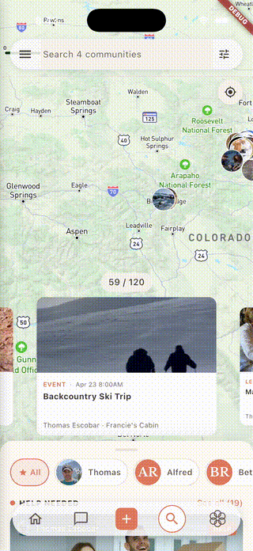

Less stuff. More life.
Borrow instead of buy, do instead of own, and lean on the people nearby. Ripls makes the simpler life the easy one.
Get on the list→ An app for the tool shed, the hand-me-down chain, the supper clubBorrow instead of buy, do instead of own, and lean on the people nearby. Ripls makes the simpler life the easy one.
Get on the list→ An app for the tool shed, the hand-me-down chain, the supper clubLook around a normal house. A drill used for fourteen minutes in its whole life. A garage you can't park in. Closets packed, a storage unit across town, a credit-card balance to match — and a calendar with more errands in it than people. Somewhere along the way we were sold the idea that the good life is something you buy, one purchase at a time.
Most of it we barely use. And most of what we're actually missing — a hand when we need one, people close enough to call, an afternoon that isn't about a screen or a store — was never for sale in the first place.
You need something, or you want to do something.
You write one line.
The people nearby lend, share, or show up.
You spent time instead of money.
Type "anyone have a pressure washer I can borrow this weekend?" or "pizza and a fire pit Friday — who's in?" and out comes a real request or a real invite, with the what, when, and where filled in — no store run, no event-planning rabbit hole.
One tap sends it, only to your circle. From there the app tracks the replies, nudges the quiet ones, and keeps the chat on topic for the details.
Who's lending, who's coming, who's bringing what — all in one place. Anyone who hasn't replied gets a soft second nudge automatically, and day-before reminders go out so plans actually happen instead of fizzling. You glance once and know it's handled.
List what's needed — the folding tables, a cooler, the tent, somebody's truck for the dump run, a side dish, the camp stove — and everybody steps up with what they've got. Whether it's a backyard dinner, a moving day, or a weekend project, the list fills in where everyone can see it, with no ten-message thread sorting out who's bringing what.

One tap to ask, one tap to offer — the drill, the ladder, the carpet cleaner, the canoe, the punch bowl, the camping gear, the kid's bike between sizes. Most of what we own sits idle ninety percent of its life; in a real neighborhood, all of it moves.
The drill that lived in your basement now keeps four homes in working order, and the truck that hauls your mulch hauls everyone's. Nobody buys what someone two doors down already has — and the closets, the garage, and the landfill all get a little lighter.
After the dinner or the project wraps, a short recap goes out the next day, and one more tap makes it a regular thing — the monthly potluck, the Sunday repair café, the seasonal swap. You approve it; you don't recreate it.
And when you've been the one hosting for a few months straight, the app finds the next person up and sends a one-tap "want to take the next one?" Somebody steps up, and nobody has to remember to ask.

If you've been keeping the circle going and you've noticed someone hasn't been around in a while, the app drafts the note you'd send if you had the time — "haven't seen you since the spring swap — potluck Sunday, come by" — built from the last thing you did together. You read it, change a word, and send it, person to person.
The gentle eye on who's drifting is opt-in, and only on the organizer's side. Most people come back the first time someone reaches out; they drift long before they decide they're done, and the note gets there before the door closes.
A Tuesday in spring: someone in the circle needs a ladder to clear the gutters, and two doors down one's been hanging in a garage all year. A tap, and it's on the porch by noon. That weekend the same handful of people end up around a fire pit nobody had to buy — folding chairs from three houses, a cooler from a fourth, kids running between yards.
It used to work this way without an app — you knew your neighbors, you borrowed the cup of sugar, you didn't buy what the block already had. The muscle's still there. It came back the moment somebody made it easy to ask.
Who's in your circle, what you've borrowed, where you live, the plans you've made — all of it is visible to the people you invited and invisible to everyone else. We don't show ads, we don't sell data, and we don't recommend you to strangers or turn your life into a feed. This isn't a marketplace, and it isn't social media.
Built by people who got tired of owning more and knowing fewer — who wanted the cup-of-sugar neighborhood back without the group text that loses the thread. We made the thing we wanted: a closed circle that runs quiet enough that the only thing you notice is that life got simpler.
Anybody can borrow a ladder once. The shift is when it becomes how you live — the swap that's run six seasons, the tool shelf the whole street shares, the standing dinner that means you actually know the people around you.
That's when "buy it, use it once, store it forever" stops being the default, and a simpler, lighter, more connected life takes its place — not because anyone gave anything up, but because it turned out to be the better one.
Started just trying not to buy a tile saw for one bathroom. Borrowed it from a guy on my street instead. Six months later we've got a little tool list going and a monthly dinner. Bought way less, see people way more.
— Dana M., Portland ME
We're starting with circles already trying to keep something alive — a tool-sharing group, a swap, a standing dinner, a hand-me-down chain, a block that wants to know each other again. We hand-pick the first ones each week.
You're on the list! We hand-pick the first circles each week, so we'll be in touch soon.